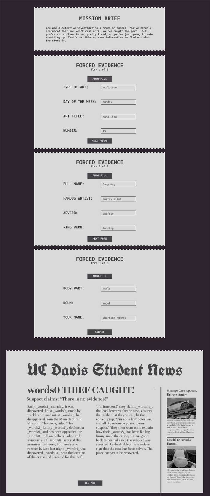

I started my design composition on Figma, looking to make a composition that gave the feel of an old-timey detective and the kinds of forms they might have to fill out.
For this, I utilized a more neutral color palette, with off-white and off-black as my main colors, hoping to emulate the 'noir' look of old detective films. I also added serration to the edges to immitate a piece of paper that may have come off a newspaper printer. Typography wise, I used a font that may look like it came off a typewriter for the forms and a nice serif font for the newspaper. Of course, I also found an extravagant and old looking font for the nameplate.